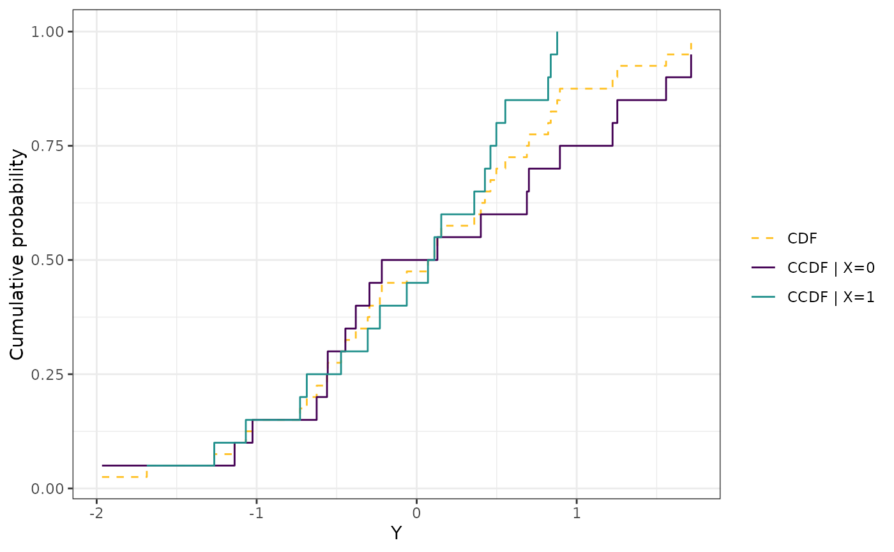
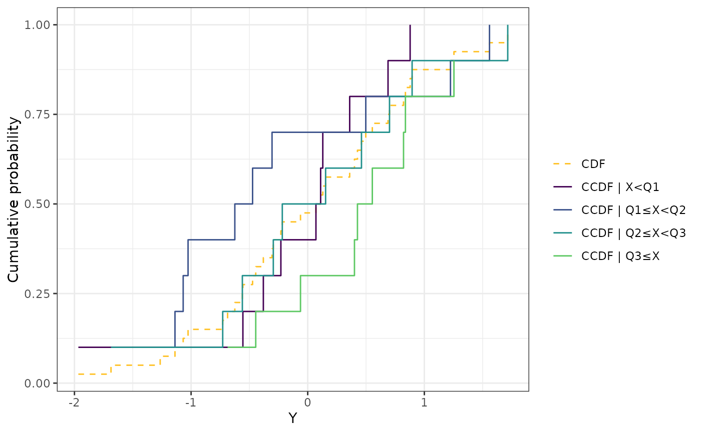
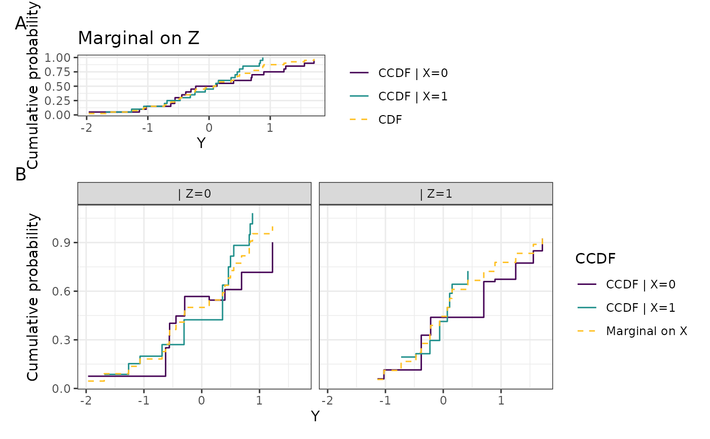
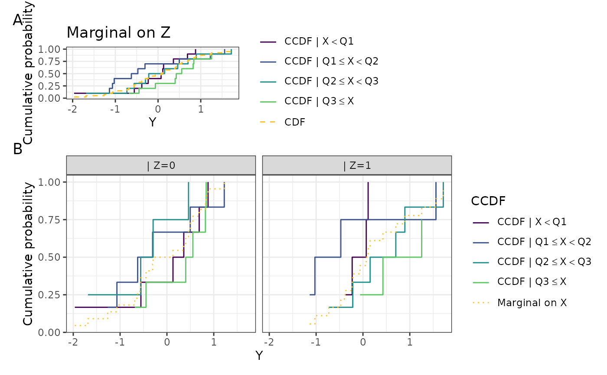
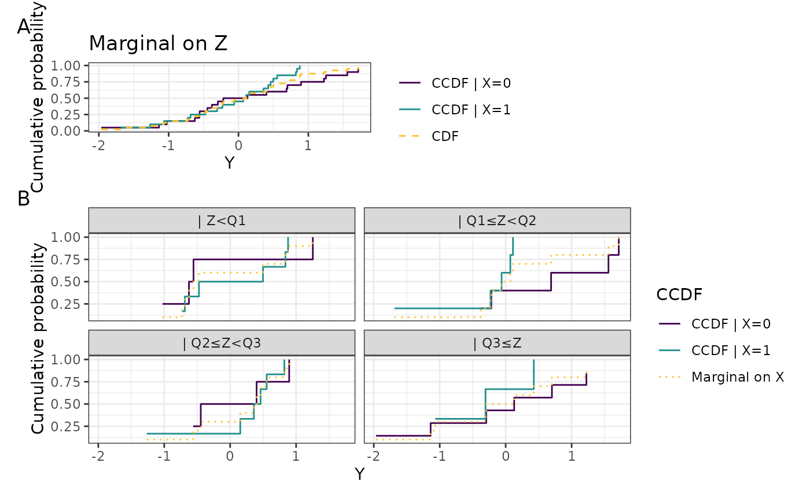
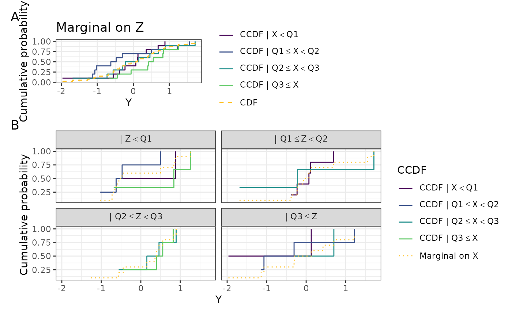
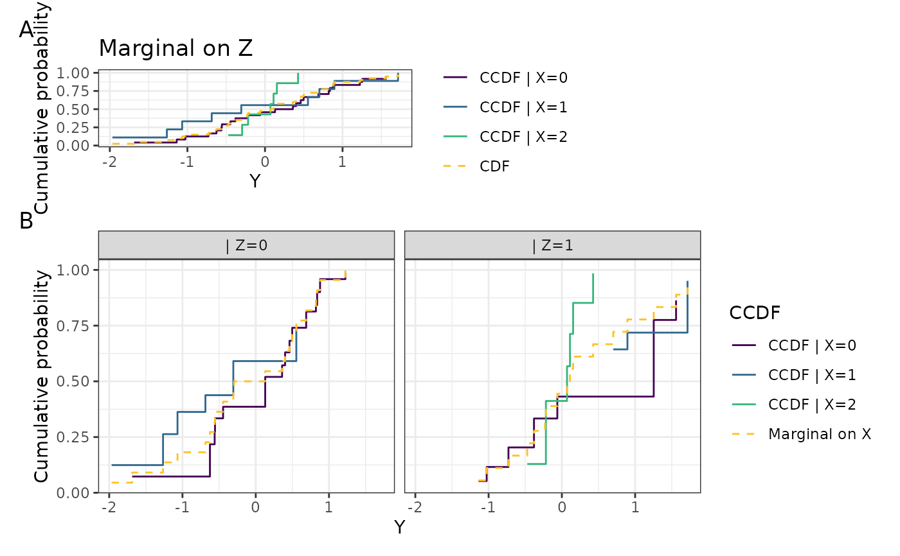
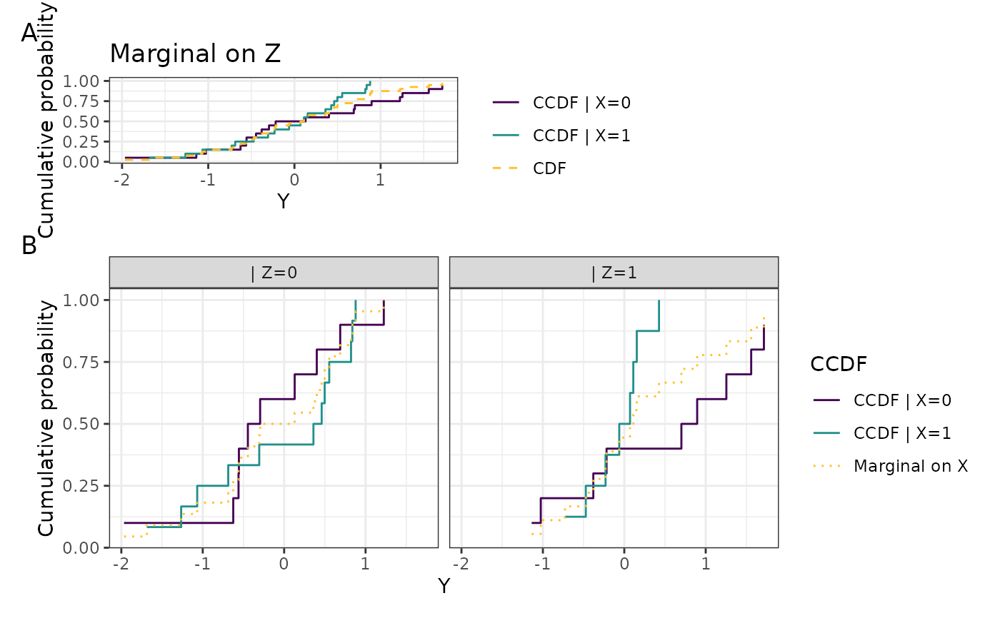

Function to plot the CCDF according to the type of X and Z
Source:R/plot_compare_ccdf.R
plot_compare_ccdf.RdFunction to plot the CCDF according to the type of X and Z
Arguments
- Y
a data frame whose first column contains the preprocessed expressions from
nsamples (or cells). Its column name is used as the x-axis label.- X
a data frame whose first column is a numeric or factor vector of size
ncontaining the variable to be tested (the condition to be tested). Its column name is used in the legend keys.- Z
a data frame whose first column is a numeric or factor vector of size
ncontaining the covariate. Multiple variables are not allowed. Its column name is used in the legend keys, the facet strips and the panel A title.- method
a character string indicating which method to use to compute the CCDF, either
'OLS'or'logistic'. Default is'OLS'for computational speed.- fast
a logical flag indicating whether the fast implementation of logistic regression should be used. Only if
method == 'logistic'. Default isTRUE.- space_y
a logical flag indicating whether the y thresholds are spaced. When
space_yisTRUE, a regular sequence between the minimum and the maximum of the observations is used. Default isFALSE.- number_y
an integer value indicating the number of y thresholds (and therefore the number of regressions) used to compute the CCDF. Default is
length(unique(Y[, 1])), i.e. one threshold per distinct observed value.- discretize
a logical flag. When
TRUE, any continuous variable amongXandZis cut atprobsinto ordered bins. IfZis notNULL,XandZare combined into a single interaction factor before callingccdf. Default isFALSEwhenXandZare already factors, andTRUEotherwise.- probs
breakpoints (as quantile probabilities) used to bin a continuous
XorZwhendiscretize = TRUE. Default is quartiles. Ignored for variables that are already factors.- bin_labels
labels for the bins produced by
probs. Default isc("Q1", "Q2", "Q3", "Q4"). Ignored for variables that are already factors, and truncated ifprobsproduces fewer bins (ties can collapse quantile breakpoints).
Value
a ggplot object. When Z is supplied and
at least one of X and Z is a factor, the returned object is a
patchwork composition stacking the CCDF marginal on
Z (panel A) above the CCDF given X and Z (panel B).
Discretization of continuous X and Z
ccdf() fits a separate regression at every y threshold. With no
constraint linking the the fits across thresholds, fitted
\(P(Y <= y | X, Z)\) are not necessarily monotonic whenever X and/or
Z are continuous variables: at each threshold the observed values for
X and Z varies, making the empirical conditioning different.
Such ccdf computations across varying covariate values at varying
thresholds do not carry any monotonicity guarantee, and become hard to interpret graphically.
For this reason, we provide the option to discretize X and
Z for graphical representation, in order to ease the interpretation.
When X or Z is continuous it is quartile-binned, and the bin
labels show the interval each bin spans using a "less than or equal" sign.
That sign is drawn through plotmath rather than as
a literal character, so it renders identically on every device (including
the classic pdf device).
workaround is needed.
A note on when X and Z are both factors
When X and Z are already both factors, ccdf() fits
an *additive* model without an interaction term. With more than a handful of
levels in either variable this means that the fitted ccdf_x can sometimes
display some mild non-monotonicity (in practice this happens only with enough
levels on both sides to matter). Set discretize = TRUE to force the
saturated interaction encoding.
Examples
set.seed(123)
n <- 40
Y <- data.frame(Y = rnorm(n))
Xf <- data.frame(X = as.factor(rbinom(n, size = 1, prob = 0.5)))
Xc <- data.frame(X = rnorm(n))
Zf <- data.frame(Z = as.factor(rbinom(n, size = 1, prob = 0.5)))
Zc <- data.frame(Z = rnorm(n))
# Z absent, X factor -- CDF plus one CCDF step per level of X
plot_compare_ccdf(Y, Xf)

# Z absent, X continuous -- CDF step plus CCDF points
plot_compare_ccdf(Y, Xc)

# Z factor, X factor -- panel B faceted by Z, steps
plot_compare_ccdf(Y, Xf, Zf)

# \donttest{
# Z factor, X continuous -- panel B faceted by Z, points
plot_compare_ccdf(Y, Xc, Zf)

# Z continuous, X factor -- panel B not faceted
plot_compare_ccdf(Y, Xf, Zc)

# Z continuous, X continuous -- a single panel, CDF plus both CCDFs
plot_compare_ccdf(Y, Xc, Zc)

# A factor with more than two levels gets one colour per level
X3 <- data.frame(X = as.factor(sample(0:2, n, replace = TRUE)))
plot_compare_ccdf(Y, X3, Zf)

# Forcing the interaction encoding even when X and Z are already factors
plot_compare_ccdf(Y, Xf, Zf, discretize = TRUE)

# }